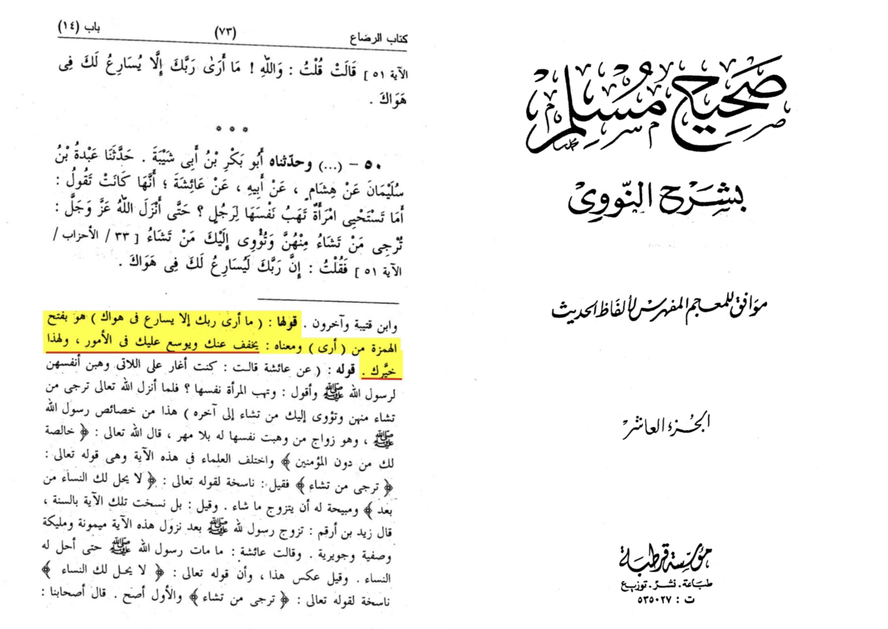

Aisha ra said Allah SWT serves Prophet Muhammad SAW
translation: “her saying ("I feel that your Lord hastens in fulfilling your wishes and desires.") means he makes things easier for you and opens the fields for you”
-Source: Sharh Sahih muslim 10/73

Someone would ask what is the diffrence between fulfilling your desires and makes things easier for him put the same word in a sentence that says the teacher … in letting me cheat in a test
How is Allah fulfilling his desires when you have whole chapters in the Qūr’ān that came to tell the prophet he is wrong like chapter 80
That claim makes no sense
Furthermore, Ibn Rajab writes:
قالت عائشة للنبي صلى الله عليه وسلم : ما أرى ربك إلا يسارع في هواك . وقال عمر في قصة المشاورة في أسارى بدر : فهوى رسول الله صلى الله عليه وسلم ما قال أبو بكر ، ولم يهو ما قلت ، وهذا الحديث مما جاء في استعمال الهوى بمعنى المحبة المحمودة ، وقد وقع مثل ذلك في الآثار الإسرائيلية كثيرا ، وكلام مشايخ القوم وإشاراتهم نظما ونثرا يكثر في هذا الاستعمال ، ومما يناسب معنى الحديث من ذلك قول بعضهم :
إن هواك الذي بقلبي
صيرني سامعا مطيعا
أخذت قلبي وغمض عيني
سلبتني النوم والهجوعا
فذر فؤادي وخذ رقادي
فقال لا بل هما جميعا
'Aishah said to the Prophet (peace be upon him) commenting on this verse (i.e. 33:51), "I see that Allah fulfills your inclinations."
Commenting on the Prophet's (peace be upon him) consultation with his Companions regarding the captives of Badr, 'Umar bin Al-Khattab said, "The Prophet (peace be upon him) inclined (hawiya) to Abu Bakr's opinion and he did not incline (lam yahwa) to what I said." With such a connotation of good/innocent inclination, the term has been used in the Reports of the People of the Book and also frequently in the poetry and prose of the Pious Predecessors. From what relates to the Hadith are the words;
"Your inclination (hawaka) in my heart made me to listen to You and obey You.
You have my heart and I was deprived from sleeping.
Leave my heart and let me sleep.
Yet, He said: I will take both."
The confirmed meaning of the hadith isn’t that he (exalted) serves prophet muhammed but he opens the fields for him
https://quranandbibleblog.com/2020/01/18/hadith-database-hadith-of-aisha-on-allah-fulfilling-the-desires-of-prophet-muhammad/